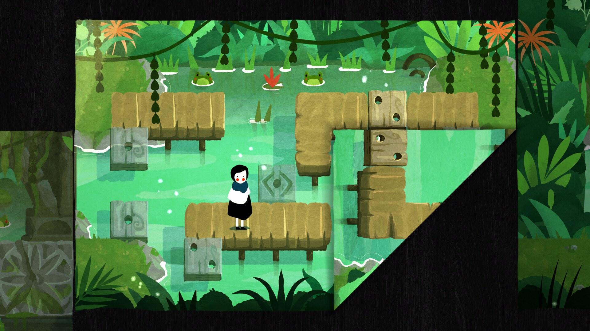

ISSUE 003 / 2026.10.22
纸感世界：折叠、透光与立体书
纸面边界、材料透光与层片开合：用六张真实参考图，理解纸如何参与空间和玩法。
Paper Trail · Papetura · Tengami
纸感美术风格化美术解谜2D3D小团队开发阅读完整研究 ↗面向 AI 游戏开发的长期美术研究。用真实参考图拆解视觉规则，再把灵感变成小团队可执行的规格、练习与验收标准。

纸面边界、材料透光与层片开合：用六张真实参考图，理解纸如何参与空间和玩法。
Paper Trail · Papetura · Tengami
纸感美术风格化美术解谜2D3D小团队开发阅读完整研究 ↗把细节预算留给轮廓、空间和交互反馈。从三种小世界出发，搭建自己的可玩营地。
A Short Hike · TOEM · Alba
3D手绘表现探索低细节Godot + DSH阅读完整研究 ↗
田园生活、雨夜咖啡馆与迷你村落：用像素、光线与秩序建立安心的日常。
Stardew Valley · Coffee Talk · Littlewood
2D像素美术生活模拟叙事小团队开发阅读完整研究 ↗试试游戏名称、视觉风格，或点击「清空筛选」查看全部研究。